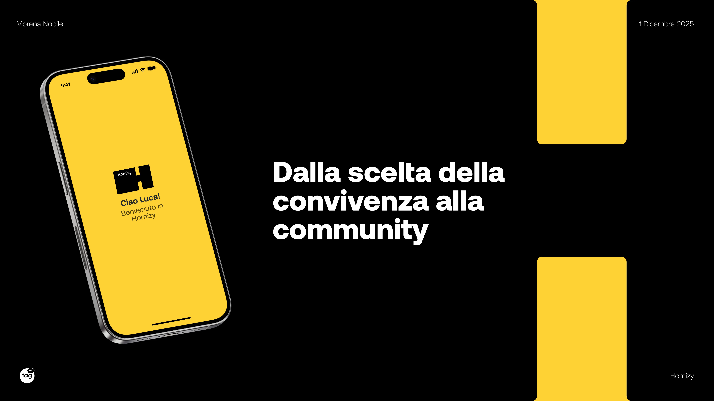
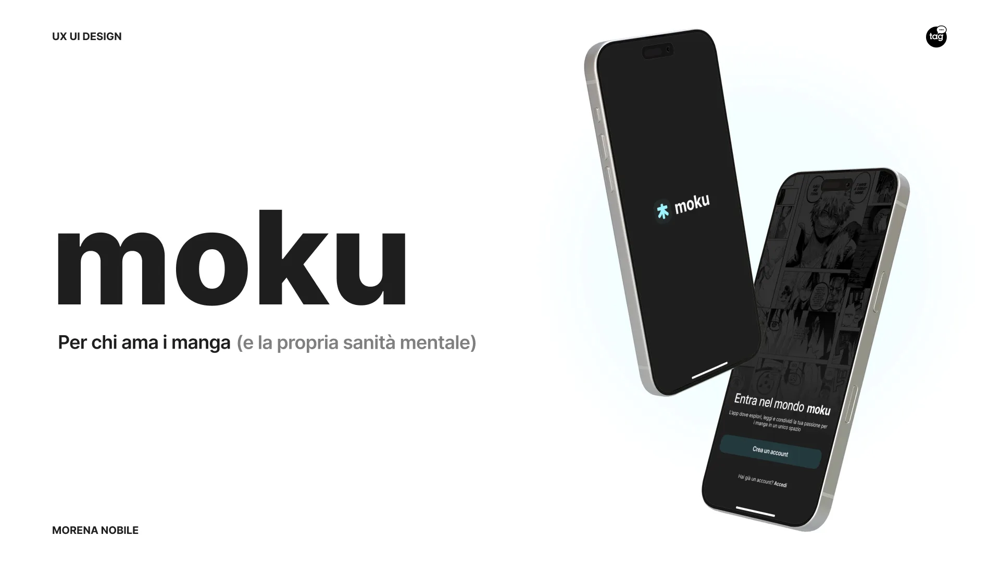
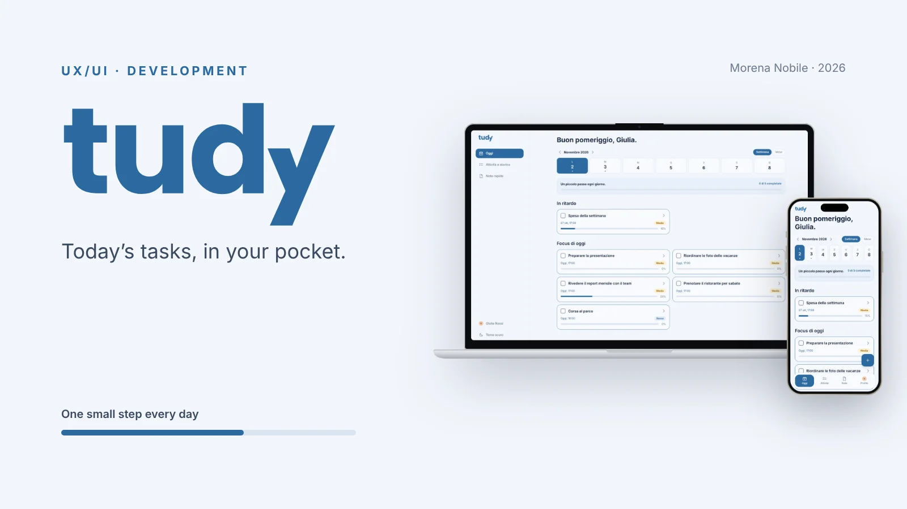
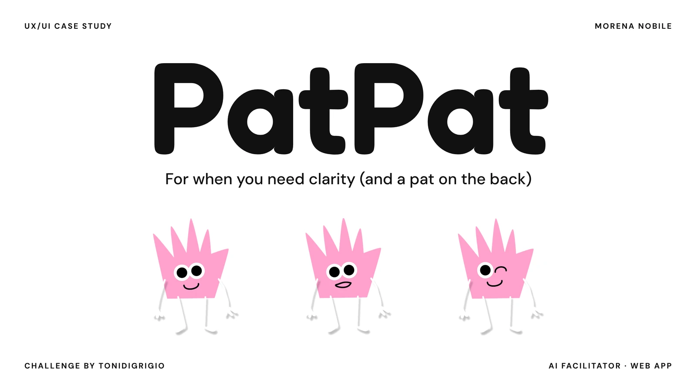
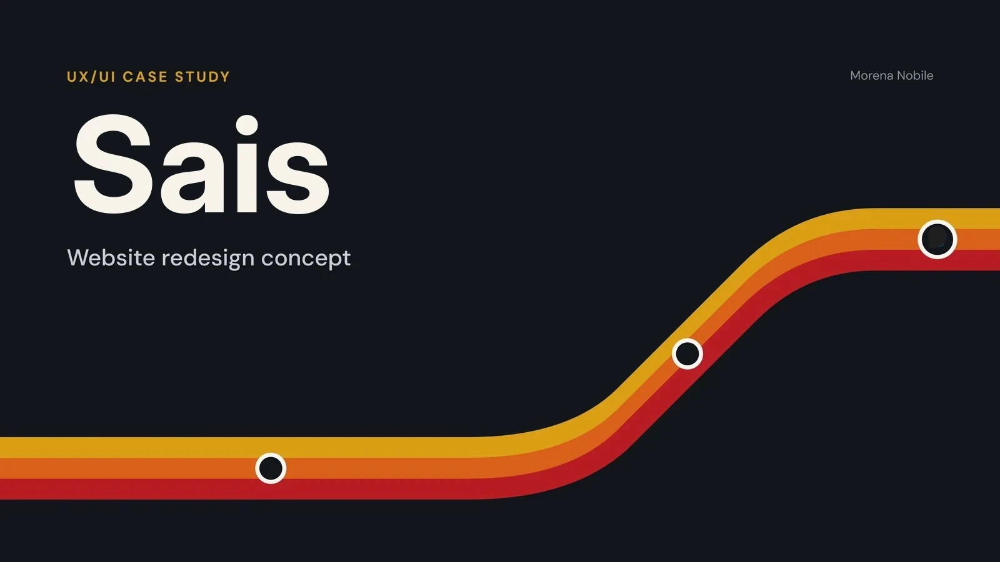
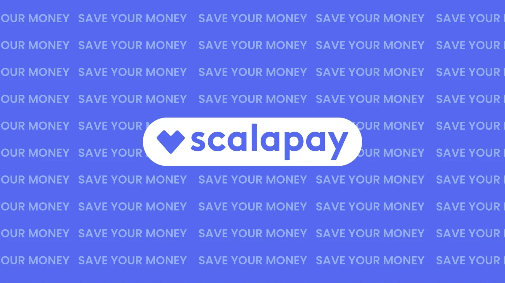

welcome to my portfolio
Hi, I'm Morena :) Basically, I spend my days trying to figure out what goes through people's minds when using an app/website.
Curious to see the results? Check out my projects below.
projects that show
how i think

Homizy
The Homizy project stems from the need to improve the living experience in coliving environments, focusing on compatibility between roommates and the building of authentic relationships.

moku
A mobile app for manga lovers that brings reading, cataloguing and community together in one place, designed to make reading a pleasure, not a complication.

tudy
A light productivity web app for today’s tasks, designed and built to sit beside the paper planner: installable, offline-first, bilingual and synced across devices.

PatPat
An AI facilitator for agencies and their clients: it puts scattered ideas in order, steps in when the team is stuck and keeps every project clear for both sides.

Sais
A redesign concept for the website of a historic Sicilian bus company, built around booking, clear information and self-service.

Scalapay
A B2C campaign brief for Scalapay: a Valentine’s Day carousel and a fairy-tale key visual that make paying in instalments easy to see and to remember.
this is how i work
Five steps, rarely in a straight line.
about me :)
Hi, i'm Morena. I move through the world of design with the mindset of a detective.
Every problem is a small mystery to solve, and every interface is a bit like a crime scene, where i look for clues in people's behavior to figure out what's not working (and why).
I consider myself a serial observer. I love asking questions, listening to people's stories, and digging into details that others often miss.
This analytical approach is what drives my way of thinking. I don't settle for the first logical answer, but i always try to understand the deeper reason behind every action or need.
When i step away from the screen, my curiosity simply takes other forms, but the goal stays the same: to explore, experiment with new things, and bring order to chaos until i find the missing puzzle piece.
off-screen curiosity:
- books
- anime
- films & series
- sports
- sewing
- cooking